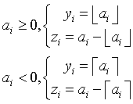

Intel® oneAPI Math Kernel Library Developer Reference - Fortran
Computes a truncated integer value and the remaining fraction part for each vector element.
call vsmodf( n, a, y, z )
call vsmodfi(n, a, inca, y, incy, z, incz)
call vmsmodf( n, a, y, z, mode )
call vmsmodfi(n, a, inca, y, incy, z, incz, mode)
call vdmodf( n, a, y, z )
call vdmodfi(n, a, inca, y, incy, z, incz)
call vmdmodf( n, a, y, z, mode )
call vmdmodfi(n, a, inca, y, incy, z, incz, mode)
Name |
Type |
Description |
|---|---|---|
n |
INTEGER, INTENT(IN) |
Specifies the number of elements to be calculated. |
a |
DOUBLE PRECISION for vdmodf, vmdmodf REAL, INTENT(IN) for vsmodf, vmsmodf DOUBLE PRECISION, INTENT(IN) for vdmodf, vmdmodf |
Array, specifies the input vector a. |
inca, incy, incz |
INTEGER, INTENT(IN) |
Specifies increments for the elements of a, y, and z. |
mode |
INTEGER(KIND=8), INTENT(IN) |
Overrides global VM mode setting for this function call. See vmlSetMode for possible values and their description. |
Name |
Type |
Description |
|---|---|---|
y, z |
DOUBLE PRECISION for vdmodf, vmdmodf REAL, INTENT(OUT) for vsmodf, vmsmodf DOUBLE PRECISION, INTENT(OUT) for vdmodf, vmdmodf |
Array, specifies the output vector y and z. |
The function computes a truncated integer value and the remaining fraction part for each vector element.

| Argument | Result: y(i) | Result: z(i) | Exception |
|---|---|---|---|
| +0 | +0 | +0 | |
| -0 | -0 | -0 | |
| +∞ | +∞ | +0 | |
| -∞ | -∞ | -0 | |
| SNAN | QNAN | QNAN | INVALID |
| QNAN | QNAN | QNAN |